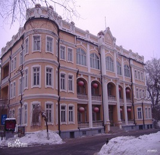
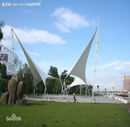
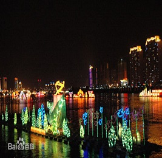
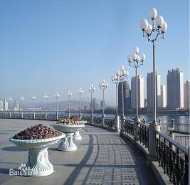

山珍海味
——
雾 锁 寒 江 松 笑 雪，凇 凝 曲 岸 柳 推 春
北方江城-雾凇之都
吉林是一个北方城市，坐落于美丽的松花江畔，松花江S形的穿过吉林造就了这个松花沿江最美 丽的城市。夏天江边郁郁葱葱，凉爽宜人；冬天更有中国四大自然奇观中最奇特的雾凇，可谓美不胜收！ 了解详情
吉林是一个北方城市，坐落于美丽的松花江畔，松花江S形的穿过吉林造就了这个松花沿江最美 丽的城市。夏天江边郁郁葱葱，凉爽宜人；冬天更有中国四大自然奇观中最奇特的雾凇，可谓美不胜收！ 了解详情
历史名人
——
给你不一样的体验，不一样的感受！
徐鼐霖(1865-1940)
民国八年（1919年）任吉林省长，“吉林三杰”
他精诗文、善书法，文化艺术成就很高

宋小濂(1860-1926)
黑龙江都督兼民政长，诗人，杰出爱国者，“吉林三杰”
在抗击沙俄外敌方面做出了杰出贡献
成多禄(1864-1928)
字竹山号澹堪,著名书法家,“清廉太守”,“吉林三杰”
被列为吉林市34位历史文化名人之首
我们的经济 / OUR ECONOMIC
- 吉林市哈达湾老工业区搬迁改造有序推进
- 老工业城市换发新青春——吉林市全力打造现代服务业
- 吉林市崛起南部新城
- 吉林经济开发区
吉林风光
——
雾 锁 寒 江 松 笑 雪，凇 凝 曲 岸 柳 推 春
- 民国建筑-西关宾馆 
- 风帆广场 
- 吉林市北大壶滑雪场
- 古典的吉林西站
- 吉林乌拉公园
- 松花江渡船
- 吉林雾凇
- 松花江河灯文化节 
- 清水绿带 
- 炮台山遗址
DO YOU LIKE JILIN CITY ?

燕归巢
许嵩
00:00/00:00
| 歌名 | 歌手 | 时长 |
|---|